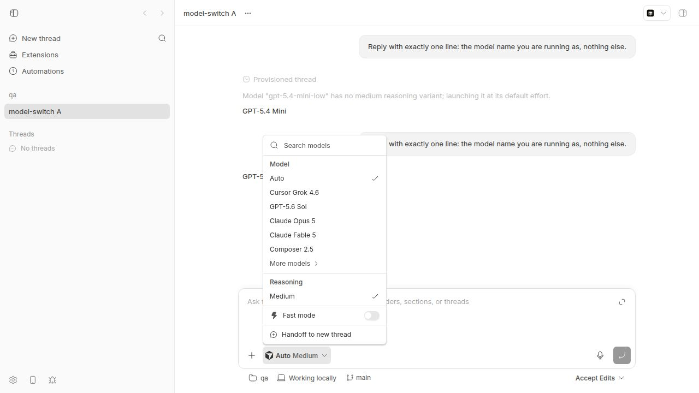
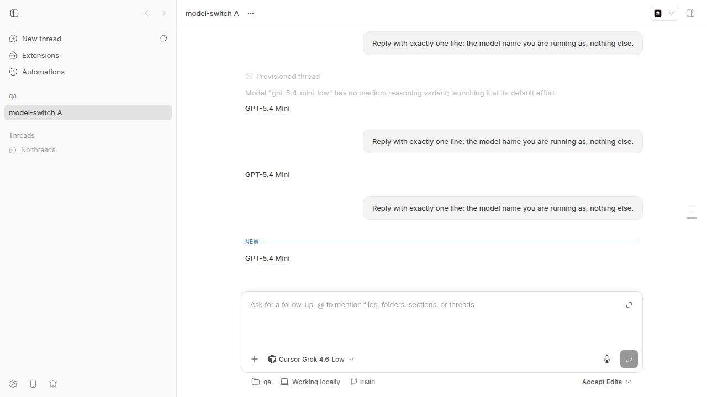
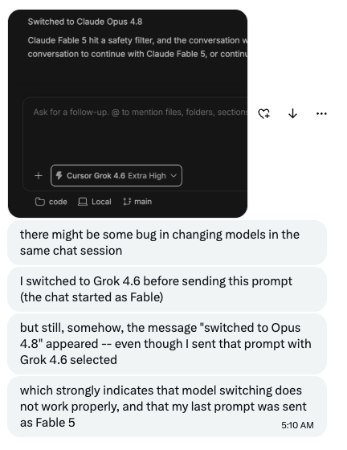

#2160 · Pi and ACP threads ignore model picker changes after the first turn
Verdict: REPRODUCED (on the ACP/Cursor provider; the Pi case in the issue shares the root cause and was traced in code, not re-run) · Root-cause confidence: high
1. TL;DR
You start a thread on one model, pick a different model in the composer, and send. The picker shows the new model and bb records it on the turn, but the agent keeps answering with the model it was launched with. The model only changes when the provider session is rebuilt: bb thread stop then send (ACP), /compact (Pi), or a daemon restart. Until then you spend the old model's quota while the UI says otherwise.
The cause is one commit. #1640 (c5b53caab, merged 2026-08-17, first shipped in desktop 0.39.0) replaced the runtime's "option drift → rebuild session" classification with "live" for both the Pi and the ACP adapters and moved reconciliation into the bridges. Neither bridge reads params.options on turn/start: the ACP bridge applies the model only when it launches or loads the agent (for Cursor and Grok Build it is a --model process flag); the Pi bridge likewise. claude-code was given a per-turn setModel call and is unaffected.
This report started from a user screenshot of a Cursor thread ("started as Fable, switched to Grok 4.6, still answered as Fable"). The user read it as a Claude→Cursor provider switch. It is not: the follow-up composer cannot change providers, and all three model names are rows of Cursor's own model list. It is the same within-provider bug as this issue, on ACP instead of Pi.
2. Claims vs findings
| Claim | Status | Evidence |
|---|---|---|
(issue) Pi keeps sending requests to the previous model after a picker change, until /compact | Unverified live, code-confirmed | Not re-run on Pi. Pi handleTurnStart never reads params.options, and the Pi adapter lost its session classification in #1640. /compact rebuilds the session, which is the same boundary as the ACP workaround below. |
(issue) bb records the newly selected model on client/turn/requested | Verified | Three ACP turns recorded gpt-5.4-mini-low, gemini-3.6-flash-low, cursor-grok-4.6-medium; all three answered "GPT-5.4 Mini" (section 4). |
| (issue) The wrong provider's quota is consumed | Verified | One cursor-agent --model gpt-5.4-mini-low process served every turn; the answers name that model. |
| (user screenshot) "I switched to Grok 4.6 before sending; the reply still came from Fable 5" | Verified (mechanism) | Same bug: the picker value reaches the bridge on turn/start and is ignored. Reproduced with the composer picker (figures 1–2). |
| (user screenshot) "model switching does not work" read as a Claude→Cursor provider switch | Refuted | The follow-up composer locks the provider; POST /threads/:id/messages carries no providerId; "Claude Fable 5", "Claude Opus 4.8", "Cursor Grok 4.6" are all entries of Cursor's model list. The "hit a safety filter / Switched to Claude Opus 4.8" notice is Cursor's own fallback text, relayed by bb. |
| Display-only bug (the right model ran, the UI lied) | Refuted | The process list and the answers prove the old model ran; the bridge recording shows no session/set_model and no respawn. |
| Covered by #1860 / PR #2149 (steers ignore model changes) | Refuted | #2149 fixed the client omitting the execution tuple on steers. Here the tuple reaches the bridge on an ordinary new turn and the bridge ignores it. |
3. Environment
- bb from source at
15f21ade7b6c5dc9291624a79d7a4b1116482876(origin/main, 2026-08-21), web dev app + server + host daemon viascripts/bb-dev-app current, fresh data dir,BB_PROVIDER_BRIDGE_RECORD_DIRset to capture bridge wire traffic. - Linux, Node v24.18.0.
- acp-cursor with
cursor-agent 2026.08.11-e8db854. Control: claude-code withclaude 2.1.238. - Two independent runs on two fresh instances (investigator: ports 14325/22325/30325, thread
thr_44p2unpauk; checker: ports 14314/22314/30314, threadthr_cz92hmc6nv).
4. Minimal reproduction
Script: 2160/repro/repro.sh. Prompt used for every turn: Reply with exactly one line: the model name you are running as, nothing else.
- Start a Cursor thread on a cheap model and let it finish.
eval "$(scripts/bb-dev-app env)" pnpm bb:dev thread spawn --project <proj> --provider acp-cursor --model gpt-5.4-mini-low \ --permission-mode accept-edits --prompt "Reply with exactly one line: the model name you are running as, nothing else." --json pnpm bb:dev thread wait <thr>
- Send a follow-up on a different Cursor model. Either from the CLI:
pnpm bb:dev thread tell <thr> --model cursor-grok-4.6-medium --reasoning-level low \ "Reply with exactly one line: the model name you are running as, nothing else." pnpm bb:dev thread wait <thr>
or in the web composer: open the model picker (provider is locked to Cursor; rowsAuto / Cursor Grok 4.6 / GPT-5.6 Sol / Claude Opus 5 / Claude Fable 5 / Composer 2.5), pickCursor Grok 4.6, type the prompt, press Enter. - Check which process served it.
pnpm bb:dev thread log <thr> | tail -4 ps -eo pid,lstart,args | grep "cursor-agent.*--model"
expected: the follow-up answers "Cursor Grok 4.6" and a cursor-agent process with --model cursor-grok-4.6-low exists actual: every answer is "GPT-5.4 Mini"; the only process is the one from step 1 $ pnpm bb:dev thread log thr_44p2unpauk | tail -8 ── Assistant ─────────────────────────────────────────────── GPT-5.4 Mini ── User ──────────────────────────────────────────────────── Reply with exactly one line: the model name you are running as, nothing else. ── Assistant ─────────────────────────────────────────────── GPT-5.4 Mini $ sqlite3 bb.db "select sequence, json_extract(data,'$.source'), json_extract(data,'$.execution.model'), json_extract(data,'$.execution.reasoningLevel') from events where thread_id='thr_44p2unpauk' and type='client/turn/requested'" 1|spawn|gpt-5.4-mini-low|medium 20|tell|gemini-3.6-flash-low|low 32|tell|cursor-grok-4.6-medium|low $ ps -eo pid,lstart,args | grep "cursor-agent.*--model" | grep -v auto 2976046 Fri Aug 21 15:24:46 2026 .../cursor-agent --use-system-ca .../index.js --model gpt-5.4-mini-low acp
- Bridge wire recording for the same thread. The runtime sends the new model on every
turn/start; the bridge only ever sendssession/promptto the agent on the same session.runtime→bridge 1787325886439 thread/start {'model': 'gpt-5.4-mini-low', 'reasoningLevel': 'medium'} 1787325891207 turn/start {'model': 'gpt-5.4-mini-low', 'reasoningLevel': 'medium'} providerThreadId=45504ab3-… 1787325929269 turn/start {'model': 'gemini-3.6-flash-low', 'reasoningLevel': 'low'} providerThreadId=45504ab3-… 1787326077682 turn/start {'model': 'cursor-grok-4.6-medium', 'reasoningLevel': 'low'} providerThreadId=45504ab3-… bridge→provider 1787325887824 session/new {"cwd": ".../repo", ...} 1787325891209 session/prompt {"sessionId": "45504ab3-…", ...} 1787325929269 session/prompt {"sessionId": "45504ab3-…", ...} 1787326077682 session/prompt {"sessionId": "45504ab3-…", ...} - Workaround that applies the new model: stop the thread, then send again. The next turn goes through
thread/resume, which relaunches the agent with the new flag.$ pnpm bb:dev thread stop thr_44p2unpauk $ pnpm bb:dev thread tell thr_44p2unpauk --model cursor-grok-4.6-medium "Reply with exactly one line: ..." runtime→bridge 1787326152475 thread/stop 1787326161358 thread/resume {'model': 'cursor-grok-4.6-medium', 'reasoningLevel': 'low'} 1787326165275 turn/start {'model': 'cursor-grok-4.6-medium', 'reasoningLevel': 'low'} bridge→provider 1787326161362 initialize 1787326161881 session/load {"sessionId": "45504ab3-…", ...} 1787326165275 session/prompt ... $ ps ... | grep cursor-agent 2995454 Fri Aug 21 15:29:20 2026 .../cursor-agent --use-system-ca .../index.js --model cursor-grok-4.6-low acp ── Assistant ── Cursor Grok 4.6



Independent re-run (second agent, fresh instance, thread thr_cz92hmc6nv): spawn on gpt-5.4-mini-low, CLI tell --model cursor-grok-4.6-medium, then picker change to Composer 2.5 + Enter. All three turns answered "GPT-5.4 Mini" from one process; client/turn/requested recorded the two new models; the recording showed three turn/start with new models and three session/prompt on one sessionId; stop + tell relaunched with --model cursor-grok-4.6-low and answered "Cursor Grok 4.6". Raw notes: run 1, run 2.
Control: a claude-code thread on Haiku, then tell --model claude-sonnet-5. The recording shows bridge→provider control_request {"subtype":"set_model","model":"claude-sonnet-5"} and the next assistant message carries model=claude-sonnet-5. claude-code reconciles per turn.
5. Root cause
Regression from #1640. Before it, the ACP adapter used classifySessionExecutionSettingsChange, which returns session on any option drift; the runtime then issued thread/resume with the new options and the agent relaunched with the new --model. That is the exact path the bb thread stop workaround still takes. The Pi adapter lost the same classification in the same commit.
On main today the bridge adapter always classifies drift as live and reconfigureThreadIfNeeded only records the new options. Reconciliation is the bridge's job.
ACP bridge. The model is applied only while constructing a session: selectAcpNativeModel is called from startAgentSession for new and loaded sessions. For CLI-flag agents the model becomes a launch argument: resolveAgentLaunchArgs pushes selectFlag + id, and Cursor's profile sets modelCli.selectFlag: "--model". turn/start never reads params.options; runTurn issues session/prompt on the existing session. turn/steer has the same shape, so a mid-turn model change is dropped too (not separately run).
Pi bridge. handleTurnStart also never reads params.options. The issue's /compact boundary is a session rebuild that picks up the recorded options.
Why claude-code is fine. Its bridge calls session.setModel(next.model) when the model differs on every turn.
Aggravating factor. #1604: idle ACP sessions are never reaped, so the stale process lives until the thread is stopped or the daemon restarts.
6. Proposed fix (first principles)
On turn/start and turn/steer, compare params.options (model, reasoningLevel, serviceTier) with the session's pinned selection. For agents with native selection (ACP session/set_model / set_config_option; Pi's own model change) apply it in place. For CLI-flag agents (Cursor, Grok Build) rebuild the session with the new launch args and emit session/replaced. Alternatively, restore a session classification at the adapter level for bridges that do not reconcile per turn; that fixes Pi and ACP in one place and matches pre-#1640 behavior. Add a bridge test per provider: start on model A, turn/start with model B, assert the provider saw a model change (set_model, or a relaunch with the new flag) before the prompt. Effort Medium. Risk: a rebuild mid-thread loses in-process agent state for CLI-flag agents, which is what the pre-#1640 code did anyway.
7. PR review
No open PR targets this issue. #1691 (draft, stale paths) changes how Cursor model ids are pinned at session start, not per-turn reconciliation; it does not address this. #2149 (merged) fixed the adjacent #1860 on the client side and is unrelated to the bridge gap.
8. Related issues
- #1860 Active steers ignore model/reasoning changes (client omitted the tuple; fixed by #2149).
- #1604 Idle agent processes are never reclaimed for non-Codex providers (keeps the stale process alive).
- #1688 Cursor Grok 4.6 hidden from the primary model picker (source of the Cursor model-list fixture).
- #1640 Agent providers as a first-class plugin surface (the regressing change).
9. Appendix
Investigation: two agents in separate worktrees and dev instances from bb thread thr_5cdapt5sfp, 2026-08-21. Hypotheses tested: H1 cross-provider switch ignored (refuted), H2 display-only (refuted), H3 steer path (same code shape, not run live), H4 Claude bridge produced the notice (refuted; Cursor produced it). A real safety filter was not triggered and is not needed: the question is which process served the turn.
Raw run notes: run-1-investigator.txt, run-2-independent-check.txt. Script: repro.sh.